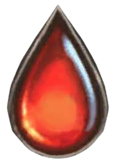

Aurelius,
Garde/Frénésie
A chaque fois qu'un monstre meurt sur le champ de bataille, Ayden gagne +0/+1 jusqu'a la fin de phase de bataille. Tant qu'Ayden le Monarque Factice est sur le champ de bataille,
vos monstres ont -1/-0 (mais jamais inférieur à 1).
3

4
Ayden, La Flamme d'Ivoire

Garde/Frénésie/Fléau
Tant qu'Ayden, La Flamme d'Ivoire est sur le terrain, tout vos monstres et héros gagnent +1/+1 et Frénésie. A chaque fois qu'un
monstre meurt sur le terrain, Ayden gagne +0/+1 jusqu'a la fin de la bataille. Les dégats que vos héros subis par les sorts sont divisé par 2.
3
5
Général d'Aden
Garde
Tout les autres monstres que vous controler de type Humains, Sylphes et "Veilleur" ont +0/+1 ainsi que Garde.
3
2
Corbeau Renégat
Fléau
Lorsqu'il est invoqué, vous pouvez infligez 3 points de dégats à un monstre et si vous controlez un autre monstre de type
'Veilleur', Sylphe ou Humain. Vous pouvez détruire une carte sur le terrain.
2
4
Serah, La lame sainte
Vif
Lorsque Serah La lame sainte est sur le terrain, tout vos monstres de type humain et sylphe obtiennent Vif.
3
1
Chevalier d'Aden
Garde
Pour chaque autre monstre d'Aden que vous possédez, ce monstre gagne +1/+1.
1
1
Champion d'Aden
Ce monstre gagne +1/+1 et Protection Divine s'il est le seul monstre sur le terrain lorsqu'il est invoqué. Lorsqu'il est invoqué et que d'autres monstres est sur votre terrain. Octroyez Protection Divine à l'un d'entre eux.
2
2
Cadette d'Aden
Si un Humain, Sylphe ou Veilleur est à proximité de la Cadette D'Aden, augmenté leurs stats ainsi que la sienne de +1/+1. Cet effet ne peut être partagé qu'avec un seul autre monstre.
1
1
Ecuyer d'Aden
Garde
Si un monstre de type 'Veilleur', Sylphe ou Humain devrait se faire détruire, vous pouvez détruire cette carte à la place.
1
1